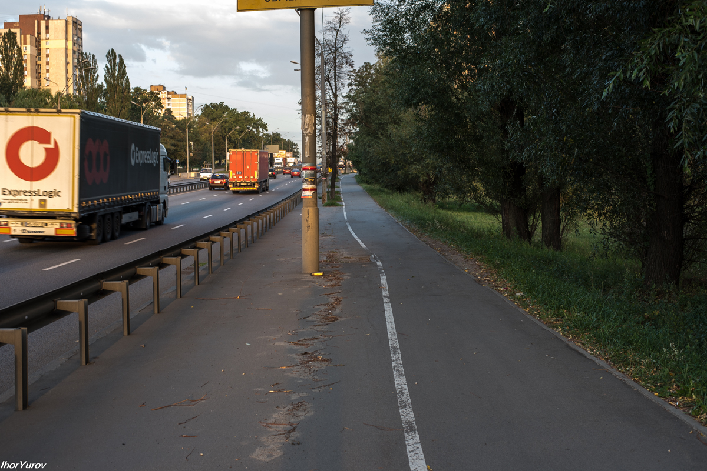
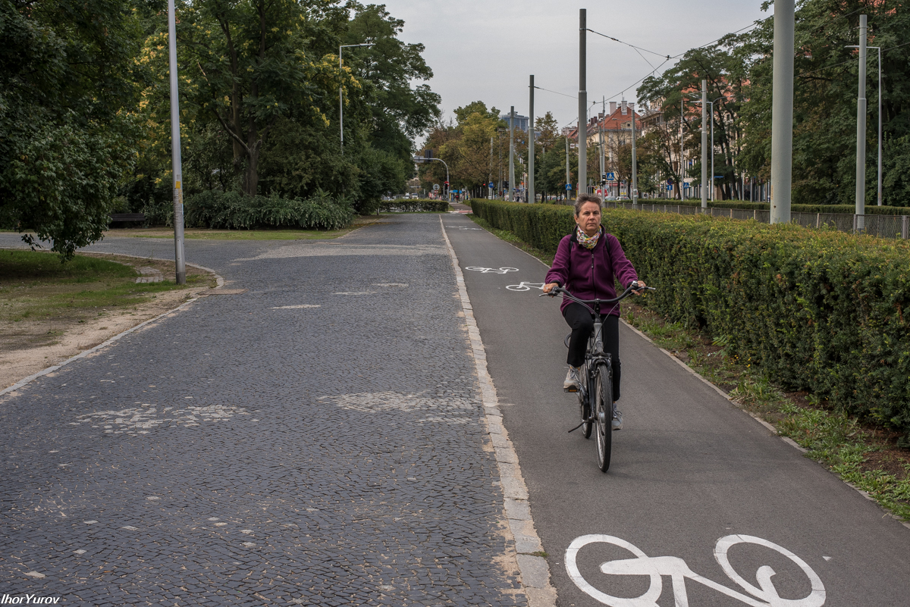
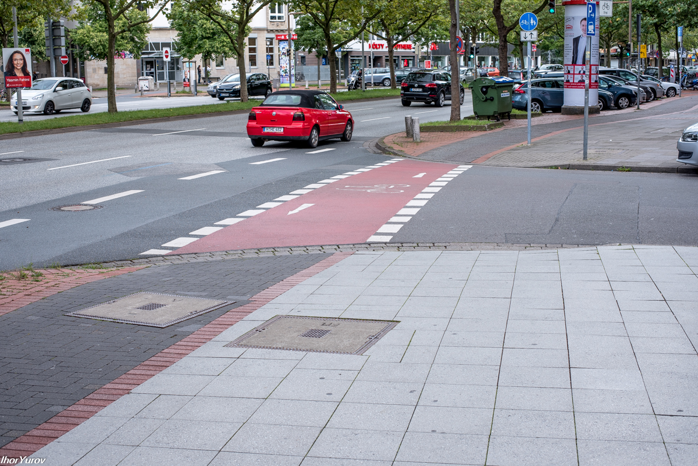

Yurov Ihor


Велодорожка, о которой я хотел рассказать, находится в Киеве на пр. Победы. Начинается она при въезде в город по Житомирской трассе. Как раз с того места, где, по каким-то непонятным причинам, лежит чей-то оставленный на всеобщее обозрение резиновый скат. Несколько метров спустя, по еще более непонятным причинам, прямо на велодорожке лежит огромный камень.
Очень символично. Камень на душе велодорожки. Видимо не с проста все это. Задумка такая. Как же без экстрима, так не интересно.
И все таки, по ней движутся! Вот и первый велосипедист. Кстати за все время пока я здесь гулял (1-1,5 ч.) проехало на велосипедах человек 15-20. У нас еще все только начинается!
Здесь сооружены перила. Если велосипедист немного устал, можно остановиться и опереться на перила, так удобнее отдыхать, до Житомира ведь еще далековато. Честно, сам не понял, что здесь было. Дальше стоит знак и, когда спускаешься вниз, вот такая надпись.
Табличка. Вопрос: "Что не так на отрезке 50 м"? Вроде как все пучком.
В этом месте штрих разметки немного искривляется. Нет, не подумайте, что рука маляра дрогнула
Второй пошел.
Здесь просто ямка и чтобы велосипедист в нее ненароком не угодил, дорожная разметка напоминает - дай вправо, а то - на...нешься. Ямку же залатать сложнее, чем пером махнуть.
Поднимаемся выше, все итс ок.
Дальше развилка. Справа для пешеходов, слева для велосипедистов. Самый идеальный вариант с разделительной полосой, никто никому не создает помех. Полностью безопасно, т.к. изолировано от проезжей части дороги.
Дорожка супер, здесь только не хватает дорожной разметки. Велодорожка должна хорошо выделяться.
Вот так, например. Это Вроцлав, Польша.
Еще

И еще.
Вернемся. Здесь вот нормально, все видно и понятно, что это велодорожка. Вот и первая (кривоватая почему-то) разметка (красная) на пересечении дороги для автомобилей.
Дальше снова, изолированная от дорог и тротуаров, велодорожка. Опять же без обозначения.
Здесь припаркованный Ланос не заметил разметку, не удивительно, от нее почти ничего не осталось. (Дачная).
Тут поинтереснее будет. На велодорожке столики и обнимающаяся парочка Значит все получится
Пора бы обновить разметку, правда?
Зато дома красивые
Вот с дорожными знаками у нас проблем никогда не было, стоят родные, на каждом перекрестке. И правильно. Подходим к “Каштану”.

На этом пересечении, разметки велодорожки по всей видимости и не было.
А вот здесь ВНИМАНИЕ, аварийный участок! Бордюр вылез собака из земли, чего это ему не сидится?
Пересечение велодорожки с дорогой в Ганновере, Германия. Бордюр опущен ниже плинтуса.
Пересечение велодорожки с дорогой во Вроцлаве, Польша.

Здесь придется проехать через стоянку, другого пути нет. Остановка Каштан. Дальше будет мост (Кільцева дорога). На мосту довольно узкий тротуар для пешеходов. Как быть? Решайте сами. Зато есть вот такая табличка.
На мосту.
Когда проектировали мост, о велосипедистах похоже не думали. Но на практике это выглядит так. Велосипедисты с пешеходами как-то разъезжаются. Хотя по правилам на этом участке велодорожка отсутствует, вставай, иди пешком. Как вам это нравится?
Здесь с разметкой на дороге все нормально.

И здесь.
Тут начинается широкий тротуар, по совместительству с велодорожкой. Разделительная полоса стерта. И еще, ребята, кто занимается разметкой, экономьте на чем-нибудь другом, но не на краске. Эти мелкие значки велосипедиков рисуйте в детском садике
Вот и результат- пешеходы не видят признаков разметки и ходят себе как им удобно, а велосипедисты ездят, сигналят и ругаются матом.
Мы на Житомирской.
Попьем кофе и продолжим


{kind=link}
{kind=link}
{kind=link}
{kind=link}
{kind=link}
{kind=link}
{kind=link}
{kind=link}
{kind=link}
{kind=link}
{kind=link}
{kind=link}
{kind=link}
{kind=link}
{kind=link}
{kind=link}
{kind=link}
{kind=link}
{kind=link}
{kind=link}
{kind=link}
{kind=link}
{kind=link}
{kind=link}
{kind=link}
{kind=link}
{kind=link}
{kind=link}
{kind=link}